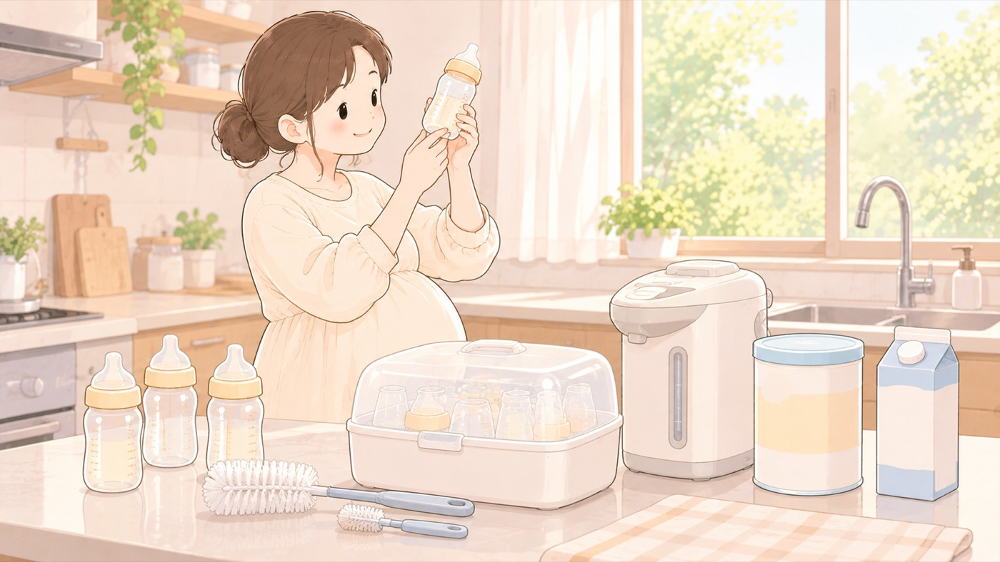

そろえるもの
ミルクの道具をそろえる
70℃以上の湯が要る。消毒の道具と、災害用の液体ミルクもここで決める
粉ミルクを使うなら、調乳に70℃以上の湯が要ります。厚生労働省のガイドラインは、調乳に使う湯を70℃以上に保ち、調乳後2時間以内に使わなかったミルクは捨てると定めています。母乳で育てるつもりでも、道具を一式そろえておくと、出なかったときに慌てずに済みます。

- すること：70℃以上を保てる湯の用意を決めておく
保温のできる電気ポットなら、夜中に沸かし直さずに済みます。やかんで沸かして冷ます方法でもかまいませんが、温度を測る手段が要ります。 - すること：びん用ブラシと乳首用ブラシを買う
ガイドラインは、哺乳びんや乳首を熱い石けん水で十分に洗い、びんの内側と外側を専用のブラシで洗うとしています。 - すること：消毒の方法を一つ決めて、その道具を買う
煮沸、電子レンジ、薬液のどれでもかまいません。市販の消毒器を使うなら、その説明書に従います。 - すること：災害用に、液体ミルクを買い置きする
常温で保存でき、調乳の手間がなく、消毒した哺乳びんに移してすぐ飲ませられます。水や燃料が使えない状況でも授乳できます。 - しないこと：作り置きして、2時間を超えたものを使わない
調乳後2時間以内に使わなかったミルクは捨てます。
🛍 グッズの選び方
PR- 哺乳びんは、0か月から使える乳首が付いたものを選びます。乳首のサイズは月齢に応じて替えます。
- びん用ブラシと乳首用ブラシは両方いります。ガイドラインが、びんの内側と外側を専用のブラシで洗うとしています。
- 70℃で保温できる電気ポットがあると、夜中の調乳が沸かし直しから始まりません。
- 消毒は、電子レンジで短時間のものと、つけ置きの薬液式があります。台所の広さで選びます。
- 液体ミルクは、使い切りの哺乳ボトルが付いたものだと、消毒ができない状況でも飲ませられます。防災の備えとして置いておきます。
- 消毒のいらない使い捨ての哺乳びんは、断水したときの手段になります。
- ピジョン 母乳実感 哺乳びん 160ml 0ヵ月〜（耐熱ガラス製）0か月から使える乳首付き。ガラス製で中が見やすいAmazonで見る →（新しいタブで開きます）
- ピジョン 母乳実感スポンジブラシ＋乳首ブラシ 2本入（セット）びん用と乳首用の両方。ガイドラインが求める2本がそろうAmazonで見る →（新しいタブで開きます）
- 象印 電気ポット 1.2L STAN.（70℃保温）70℃保温。調乳のたびに沸かさずに済むAmazonで見る →（新しいタブで開きます）
- ピジョン 哺乳びんスチーム除菌・乾燥器 POCHITTO🏅 マザーズセレクション大賞2025（哺乳びんスチーム除菌・乾燥器 ポチットシリーズ）Amazonで見る →（新しいタブで開きます）
- 明治ほほえみ らくらくミルク防災セット15本（使い切り哺乳ボトル15個入り）液体ミルクと使い切りボトルが一組。水も消毒も要らないAmazonで見る →（新しいタブで開きます）
- クロビスベビー ステリボトル 使い捨て哺乳瓶 240ml 5個入り（消毒不要・日本正規品）消毒不要。断水していても使えるAmazonで見る →（新しいタブで開きます）
リンクはAmazonアソシエイトリンクです。当サイトはアフィリエイトプログラムに参加しています。Amazonのアソシエイトとして、当サイトは適格販売により収入を得ています。 選び方の方針
この項目の根拠
- 乳児用調製粉乳の安全な調乳、保存及び取扱いに関するガイドライン（厚生労働省）（新しいタブで開きます）
乳児用調製粉乳の調乳に当たっては使用する湯を70℃以上に保つこと、調乳後2時間以内に使用しなかったミルクは廃棄すること、高温の湯を取り扱うのでやけどに注意すること。哺乳及び調乳に使用された全ての器具を次の使用前までに徹底的に洗浄及び滅菌すること、哺乳びんや乳首は熱い石鹸水中で十分に洗いびん用ブラシ・乳首用ブラシを使用すること、市販の滅菌器を使用する際はメーカーの取扱説明書に従うこと。 - 授乳・離乳の支援ガイド（2019年改定版・こども家庭庁・PDF）（新しいタブで開きます）
乳児用液体ミルクは液状の人工乳を容器に密封したもので常温での保存が可能なこと、調乳の手間がなく消毒した哺乳瓶に移し替えてすぐに飲むことができること、地震等の災害によりライフラインが断絶した場合でも水・燃料等を使わず授乳することができるため災害時の備えとしての活用が可能であること、製品により容器や賞味期限・使用方法が異なるため製品に記載されている使用方法等の表示を必ず確認すること。